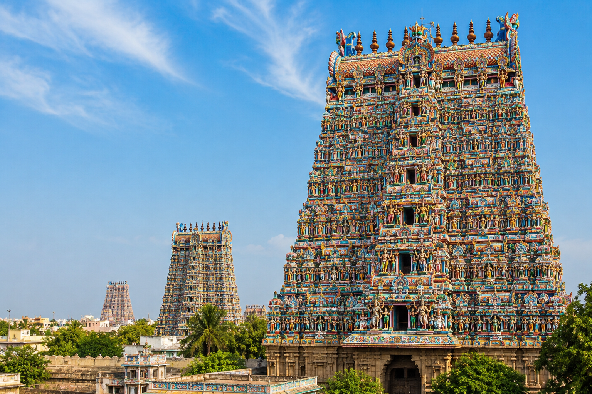
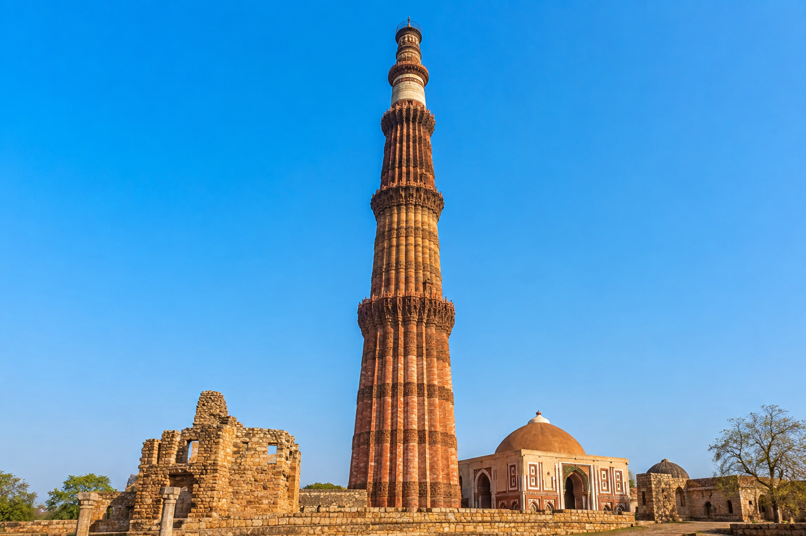

Taj Mahal
A white marble mausoleum in Agra, built by Emperor Shah Jahan in memory of his wife Mumtaz Mahal.

Hawa Mahal
Jaipur's "Palace of Winds," a five-story pink sandstone facade with 953 intricately carved windows.

Golden Temple
The holiest Sikh shrine in Amritsar, its upper floors covered in gold and surrounded by a sacred pool.

Hampi
Ruins of the once-mighty Vijayanagara Empire in Karnataka, featuring the iconic stone chariot at Vittala Temple.

Konark Sun Temple
A 13th-century temple in Odisha shaped like a colossal chariot dedicated to the Sun God, Surya.

Khajuraho Temples
A group of Hindu and Jain temples in Madhya Pradesh, famed for their intricate sculptural artistry.

Meenakshi Temple
A vibrant temple complex in Madurai, Tamil Nadu, famous for its towering, colorfully painted gopurams (gateway towers).

Qutub Minar
A 240-foot tall minaret in Delhi, showcasing exquisite Indo-Islamic architecture and intricate carvings.

Gateway of India
An Indo-Saracenic monument overlooking the Arabian Sea in Mumbai, built to commemorate King George V's visit.